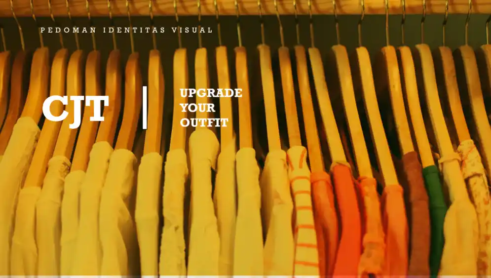

Logo · Tipografi · Ambigram
nurba.idn
Logo ambigram menggunakan tipografi aksara Hanacaraka — dapat dibaca dari dua arah. Menggabungkan estetika tradisi Jawa dengan identitas digital modern.

Logo · Geometris · Kaligrafi Arab
Nurba Studio
Logo segitiga terinspirasi kaligrafi huruf Arab. Memadukan keanggunan tradisi dengan form modern yang tegas.

Logo · Kemasan · Filosofis
Mortes.Kopi
Logo merepresentasikan 7 pendiri, dilengkapi desain label kemasan botol kopi yang filosofis.

Visual Identity · Apparel
CJT Apparel
Identitas visual elegan untuk brand celana pendek premium. Mencakup hangtag fisik dan template supergraphics.

Logo · Ilustratif · Kuliner
Bakso Mie Wamin
Logo ilustratif dengan elemen wajan mini, mi, dan bakso — mengeksekusi permintaan spesifik klien kuliner lokal.